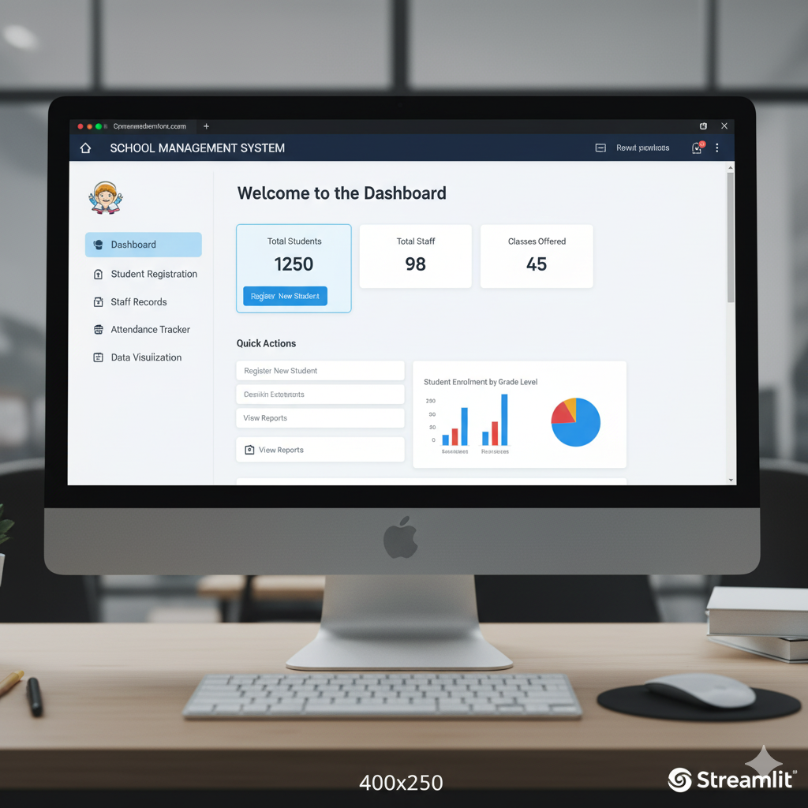
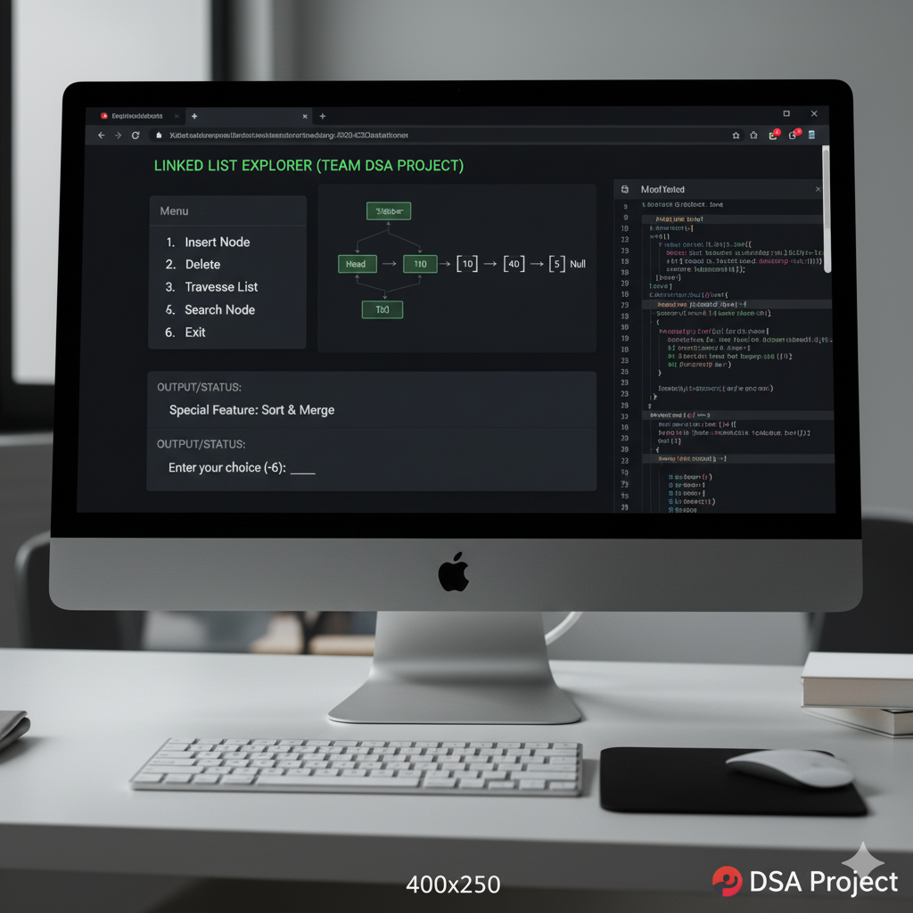
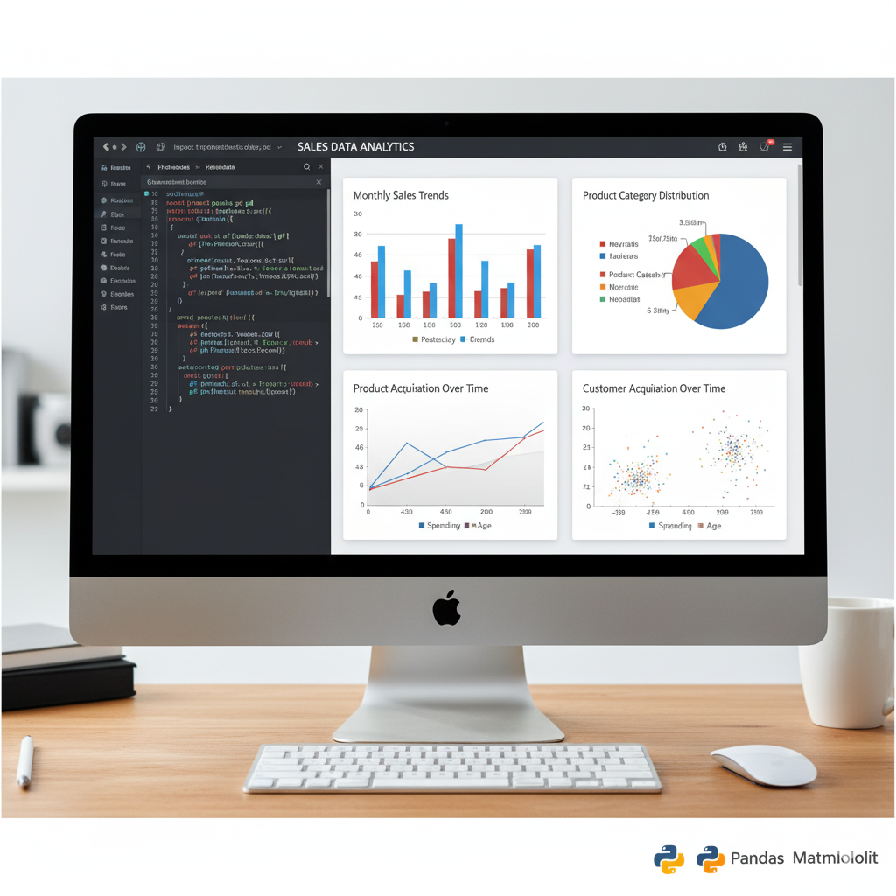
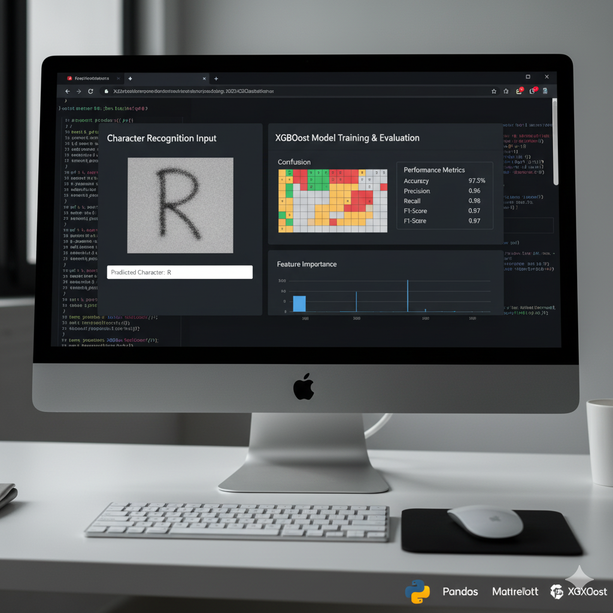
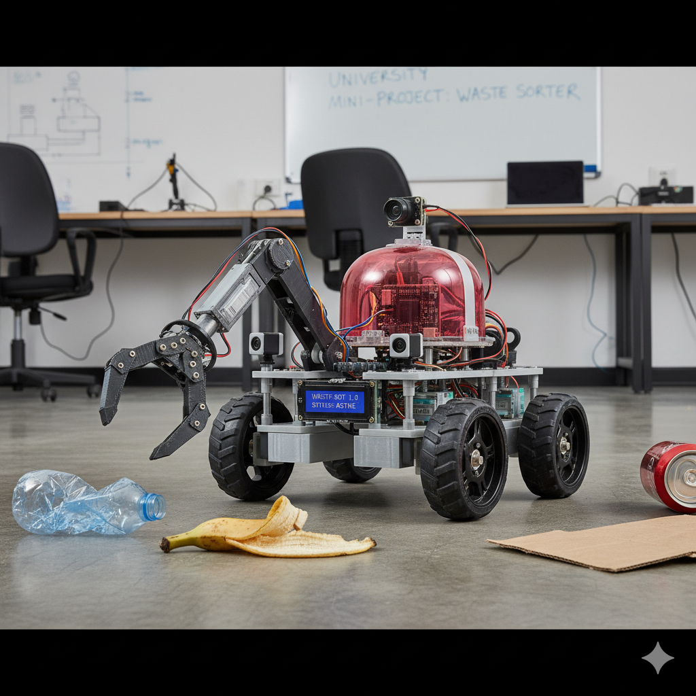

Profile Summary
A strong foundation in computer science, robotics, and embedded systems was built through academic learning and hands-on projects. Skills in Python, Java, C, C#, HTML, CSS, SQL, Arduino, and Raspberry Pi were developed and applied in practical environments. Experience in robotics was gained through working with sensors, microcontrollers, actuators, and machine-controlled systems. Interests in data science, machine learning, software development, and robotic automation were demonstrated through continuous learning and project work. Leadership experience was obtained by serving as the President of the Society of Technological Studies of the Department of Physical Sciences and Technology at Sabaragamuwa University of Sri Lanka.
Skills
Programming Languages
Python, Java, C, C#
Web Development
HTML, CSS, Streamlit
Data Analysis & Viz
Pandas, NumPy, Matplotlib
Algorithms & DS
Data Structures, Algorithms
Version Control
Git, GitHub
Databases
SQL, SQLite
Artificial Intelligence
Machine Learning, AI Concepts
Robotics
Arduino, Raspberry Pi
Projects

School Management System
Python + Streamlit
A simple school management web application was developed to handle student registration, staff details, attendance, and data visualization. Streamlit was used to create the UI, while SQLite was used for storing and retrieving data. Interactive dashboards and dynamic forms were implemented to improve usability.
View Project
Linked List Mini Application
DSA Project
A menu-driven application was created as part of a team project to demonstrate linked list operations. Features such as insertion, deletion, searching, and traversal were implemented. A special feature was added to extend the functionality of the basic linked list program.
View Project
Data Visualization & Analysis
Python, Pandas, Matplotlib
Multiple Python scripts were produced to analyze datasets and present insights graphically. Tools like Pandas and Matplotlib were used to clean data, compute statistics, and generate visual summaries.
View Project
English Character Recognition
Python, Pandas, Matplotlib,xgboost
English character recognition was implemented using machine learning techniques. The project involved preprocessing image data, training models with xgboost, and evaluating performance metrics to achieve accurate recognition results.
View Project
Waste Classification Mobile Robot (University Mini Project)
Arduino, Raspberry Pi, Python
A mobile robot capable of identifying and classifying waste was designed and developed as a university mini project. A Raspberry Pi Zero was used as the main controller, and image-based classification methods were incorporated to recognize waste categories. The robot platform was built with sensors, motors, and a movable chassis. All control processes—including navigation, detection, and waste sorting—were automated through Python scripts executed on the Raspberry Pi.
View ProjectExperience
Academic & Personal Projects
University Coursework
Experience in developing academic and personal projects was gained through university coursework. Collaborative skills were strengthened by working in teams for software projects. Knowledge in testing, debugging, and documenting code was applied in multiple practical tasks.
Education
BSc (Hons) in Computer Science & Technology
Sabaragamuwa University of Sri Lanka | 2022 - Present
Concepts in software engineering, databases, algorithms, multimedia technologies, and machine learning were learned and applied.
Achievements
- Coursework projects were completed with high performance.
- Technical skills progress was recognized by instructors through consistent project quality.
- Contributions to team-based projects were appreciated by peers.